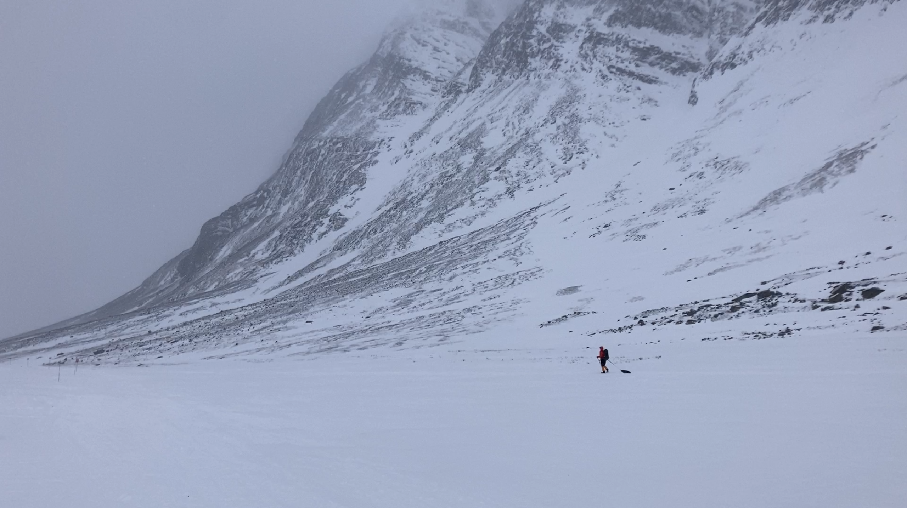
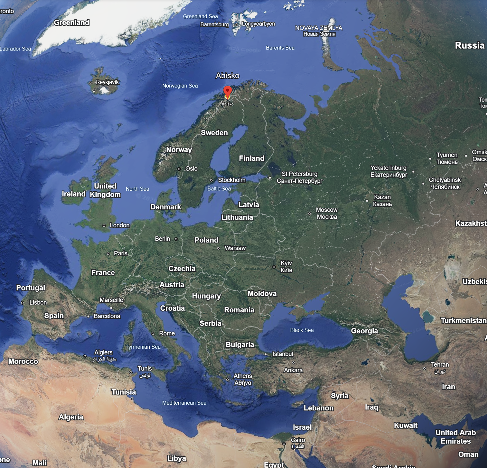
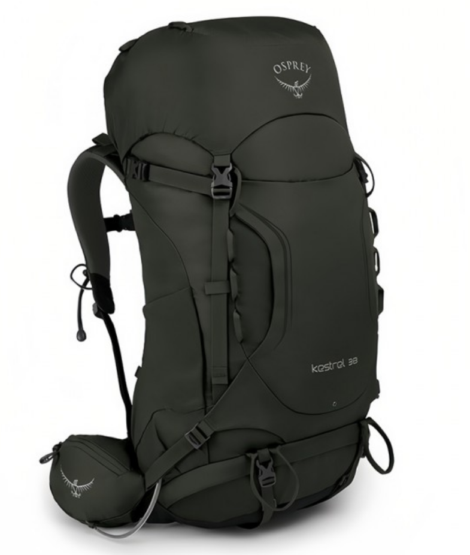
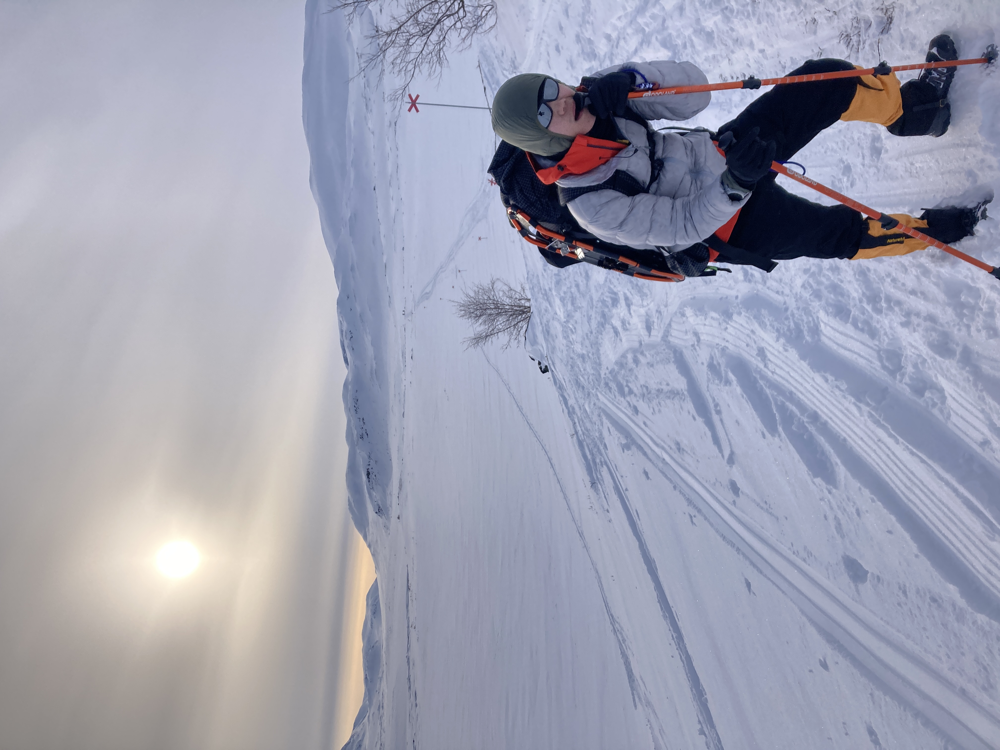
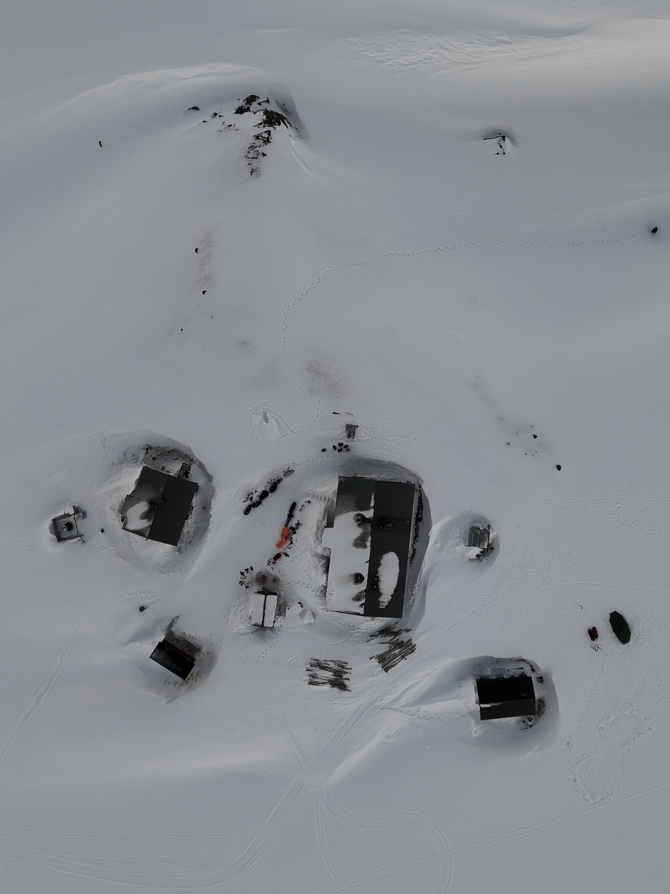
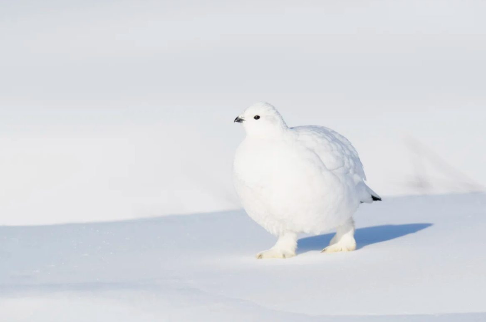

我读硕士的两年的确去了很多地方，留下了很多记忆。在其中，瑞典北边的国王之路的徒步之旅是相当难忘的回忆。
国王之路是瑞典北部的一条经典徒步路线，全长大概440公里。由于全程太长，我和一个同学，像大多数徒步者那样，选择穿越最经典的北段（阿比斯库 Abisko - 尼卡卢奥克塔 Nikkaluokta），长度为105公里，耗时6天左右。

什么是徒步
徒步基本上就是人为了愉悦身心而选择从一个地点移动到另一个地点。所以广义上来讲，找一个风和日丽的下午在公园或者海滩散散步也算作徒步的一种。但是当一些人们不满足于这些短途的城市里的风景，他们就会前往更人烟稀少的郊区乃至户外进行徒步活动，时间也可能从一个下午变成一两天乃至一周。为了保证长期的徒步能够良好地进行，这些爱好者将穿着轻便的衣服，结实的徒步鞋，同时为了携带更多的食物和水，以及帐篷和睡袋等寝具，徒步者会背着巨大的徒步背包来携带更大体积大重量的东西。考虑到徒步者通常能够携带自身重量20%乃至25%的物品前进，多日徒步背包的重量可以达到12-15kg，为了容纳下所有物品，多日徒步背包容积可能达到40升到60升。而为了更轻松地携带所有物品前进，徒步用品的轻量化就很重要，例如徒步者会购买更轻的睡袋和衣物来追求"暖重比"。
国王之路北段虽然也属于多日徒步，但是沿途有多个木屋供人补给和住宿。木屋没有网络和自来水，需要打水、烧柴取暖、使用蜡烛和燃气照明。因此我们并没有携带帐篷，只是带了食物和睡袋。不过这段路线在北极圈以内，我们前往的时间是三月初，天气仍然十分寒冷，部分路段的积雪可以达到半米深，因此我们需要穿着"踏雪板"前进。这是一种宽短的雪板，底部带有抓地齿，用于减小徒步者脚掌对雪地施加的压力，同时增加冰雪表面行走的摩擦力。将"踏雪板"绑在普通的户外徒步靴上就能直接进行冬季雪地徒步。


环境
国王之路北段的风景非常优美，我们徒步在广阔的雪地，冰封的湖面上，我们徒步在苔原上，两侧是充满积雪的山峰。尽管大段的道路都被雪所覆盖，但是我们依然能从冰面、桥梁和取水点判断，夏季这里的沿途应该是一片丰饶的土地，在山体之间，被溪流所环绕的。这一趟旅行同时也能路过瑞典的最高峰：凯布讷凯塞峰（Kebnekaise）。日照非常充足，甚至在雪地反射的加持下，给人以温暖的感觉。沿途每隔一段距离就有醒目的路标（由金属杆和红叉形状组成），用来指引前进的方向，从这个金属杆露出的长度来看，部分路段的积雪应该有一米多深。


徒步的危险
徒步是有危险性的。徒步的危险在于前往一个人烟稀少的地方，一旦出现紧急情况无法应对就会陷入险境。这次国王之路最大的危险就是失温。人体是一个恒温的热源，好比一个火炉，源源不断地向外释放热量。我们平时讨论的冷并不是人体的温度，而是人体的散热速度。当我们感到寒冷的时候，意味着人体在高速散热，此时骨骼肌颤栗来加大热源的热量供应以维持体温。但是当人体热量流失速度过快，就会发生失温的情况，体温无法被维持而被迫下降，此时人会行动迟缓，意识模糊，乃至死亡。虽然我们此行携带足够的保暖衣物，但是这些保暖衣物通常仅能够提供日间的有限的保暖。如果衣服破损，被打湿，脚踩进溪水，或者因为各种原因导致日落前无法抵达木屋，都可能带来大麻烦。在此行中我的手套质量不佳，我能感觉到手部一直暖不回来。我的同学也有踩碎冰层，一只脚被溪水打湿的遭遇。不过总体来说我们是安全的。事实上在后面一次多洛米蒂的飞拉达之旅，同样是我们，陷入了真正的险境，也让我真正感到后怕，我也许会在后面的文章讲到。以下是一些视频，展示大风时候的样子。
极光
那个下午我们提早到了木屋，当时天还是亮的。由于我们都很疲惫于是早早在床铺上睡着休息了。中途我还被其他徒步者的声音吵醒，但是也继续半梦半醒地睡着。等我醒来后，看到两个老外正兴奋地走进这个宿舍，我抬起头问他们"外面怎么了，那些人在聊什么"，他们两个很开心地和我解释，刚才大家看到了极光，很清晰。我于是转过来趴在床铺上往窗外看，但是什么极光也没有，太阳刚刚落山了，外面是白雪皑皑一片。
我很失望，几天前在木屋买东西的时候我俩问了店老板关于极光的天气预报。由于国王之路没有网络，因此木屋的商店是通过卫星通讯技术来进行收付款，交流，查看天气预报的。店老板指着写在一个笔记本上面的字迹跟我们说，理论上晚上总是能够看到极光的，但是如果天空中有一点云，就会遮盖住极光。过几天是晴天，也许是你们这次徒步之旅的看极光的窗口期。然而看起来我们刚刚错过了。
我和同学于是不睡了，我们下床来到木屋的公用厨房区域，点上蜡烛，边聊天边等待极光。他觉得如果刚才有极光那么晚些时候一定还能看到。我们聊了很久，我们在厨房吃了一些公用食物，我看了墙上的地图，我研究着书柜里的瑞典语书籍，我研究着墙上的地形路线图，我看着餐桌上之前的人剩下的忘记收拾的水瓶，想象着大家之前都在做什么。就在我百无聊赖之际，极光出现了。
起初我们在公共厨房透过窗口看到一缕一缕的极光，这边一簇那边一簇的。极光的形状是动态的，好像飘动的丝带一样。有的时候在天空的某个角落悄悄出现，过一段时间又消失不见。细看极光是由顺着一个方向的一丝丝的光亮的线段组成的，有种丝绸或者皮毛的质感。我们实在很兴奋，于是决定顶着外面夜间的低温和寒风，出去看一看。然后我看到了：
我甚至不想在这里放置一个极光视频，因为我不想让读者心里认为"哦，极光是这样的"。事实上极光不是视频里这样的，它远比视频里看到的鲜艳，清晰，只是我没法在夜里很好地把它们拍下来。极光的确是布满了整个天空，它甚至点亮了大地。我从来没有见过类似这样的东西。这也绝不是什么视频能够呈现的画面，只有前往极北之地肉眼观察，才能体会极光的美丽。我在寒风中穿着一件薄羽绒服冻得都哆哆嗦嗦，我拍照的手指拿出来几秒钟就变得僵硬，但是我只想再多看一会。我甚至觉得给"极光"命名的人很过分，因为这个词把它说得太轻巧、太理所当然，以至于我在真正见到之前，虽然一直听说过"极光"，学到那是"高速粒子被磁场捕获与大气碰撞"之类的说法，但那时我并未真正理解极光是什么。
动物
在整个徒步之旅中我没有看到太多的动物，在最开始的时候我看到天上的老鹰，然后的几天里都没有见到其他活物。我很快接受了这一个事实，因为我看到整个大地都被冰雪覆盖，几乎看不到任何有机物，而夜晚狂风呼啸，我想象不到有什么东西能够在这环境里生存下来。也正是因此，在后面的徒步过程中，每见到一种动物都让我感到很惊喜。
我见到过一种浑身雪白的鸟，比麻雀大但是比鸽子小，成群结队出现在雪地上。这些鸟类身体几乎呈球形，看起来非常蓬松。如果不是它们有黑色的眼睛，很难在雪地上辨识出它们。很遗憾我没找到当时拍摄的照片，经过我刚才的调查，这应该是某种雷鸟。

此外我还遇到过驯鹿群。那是倒数第二天，经过长途跋涉和低温，我们已经非常疲惫了。那是我在很远处看到的一大群动物。由于距离太远我无法很好地辨认。我和我朋友说："这也许是狼群吗？我们遇上狼群了吗？"我不禁紧张起来，但是仔细看又感觉这些动物体积比狼要大，看起来有点像马，但是比马要小。直到走得真的很近了，我们才弄清楚这是一群鹿。当晚我们与其他徒步者攀谈得知它们是体型更小的驯鹿（reindeer），也就是传说中圣诞老人的坐骑，有的人还说遇见过麋鹿。